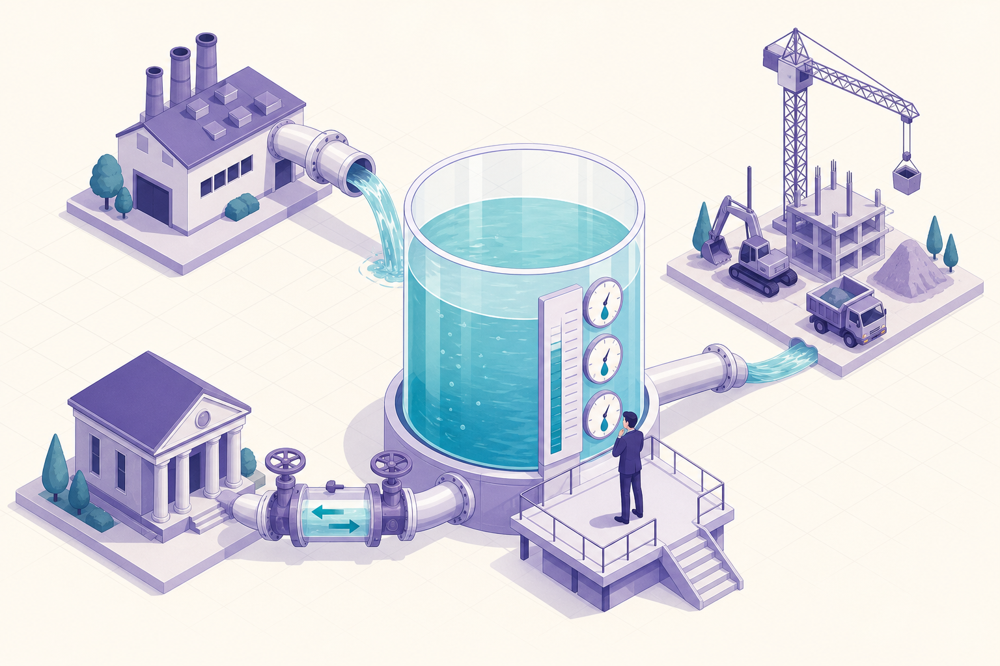

板块一 · 读懂报表 · 打地基
把会计当成一门『商业语言』先学会认字，再看懂三张报表怎么拼成一个整体。
第1章 会计：商业语言 p1
📖 不是教你记账，而是让你看懂『数字在替企业说什么』——谁在用报表、用来回答什么问题。
本章小节
1.1 商业活动的模式
1.2 会计：一门商业语言
1.3 财务会计的定义
1.4 财务会计的使用者
1.5 会计流程的介绍
1.6 财务会计和管理会计
1.7 有效财务报表的质量指标
1.8 会计的演变史：从苏美尔到卢卡·帕乔利
是什么 会计是描述商业活动的一门『语言』：把企业里买卖、投入、产出这些事，翻译成大家能对账、能比较的货币数字，最终产出三张财务报表。
为什么重要 企业和资本提供者是『委托—代理』关系，管理者必须用同一套语言向股东、债权人汇报『钱怎么用、创造了多少财富』。看不懂这门语言，就看不懂谁在替你说话。
决策者怎么用 先分清自己是哪类使用者（股东看回报、债权人看偿债、你自己看全局），再带着问题去读对应的表；同时警惕『会计战略』——同一桩生意，合规范围内也能讲出不同的数字。
🗣 一句大白话 会计就是生意的『普通话』。不学这门话，董事会上人家报数你只能点头；学会了，你能听出数字里哪句是实话、哪句是修辞。
🎓 课堂补充 第1章 · 会计：商业语言 上面是预习四段卡，下面精读区是预习底稿
第一讲 · 导论：财务报告体系综述 教授讲了财务报告体系的基础理论，并特别强调了"信息"在整个财务报告体系里的重要性。
🗣 大白话： 财务报表说到底是一套"信息传递系统"——公司把经营情况翻译成数字，传给看不到公司内部真实运作的人（股东、债权人、监管者），信息越真实、越及时、越可比，这套系统才越有用。这也是为什么后面每一章讲的规则（怎么确认收入、怎么算折旧），本质都是在回答"怎么把信息传得更准确"这一个问题。呼应预习 · 精读区"核心三 · 谁在读这张表"与"六大质量指标"
例子 · 二手车市场（信息不对称模型，三个假设）
假设① 卖家信息完全 卖家对自己这辆车的真实车况非常清楚。
假设② 买家信息不足 买家不清楚具体某一辆车的真实车况，处于信息弱势、尤其吃亏。
假设③ 市场公开信息 买卖双方都知道的公开信息是：市场上所有车的真实质量呈平均分布。
💬 教授课堂提问： 基于以上三个假设，买家最多愿意出多少钱买这辆车？答： 作为潜在买家，看不出具体这辆车的好坏，最多只愿意按"均值"出价——教授的例子里就是 50 元 （车的真实价值平均分布，中间值 50）。
🗣 大白话： 买家不知道手里这辆是好车还是烂车，只知道"整体上一半好一半坏"，那出价就只能按平均水平来：出高了怕买到烂车吃亏，所以 50 元是买家理性出价的天花板。放到财务报表上也一样：如果投资人完全看不清一家公司的真实情况，就只会按"行业平均水平"给这家公司估值——真正好的公司会被低估，这正是公司需要靠可信的财务报告来"证明自己不是烂车"的原因。
💎 没有信息，就没有市场。教授金句 · 第一讲
🗣 大白话： 接着二手车的例子往下推：买家只肯出 50，那些真值 80、90 的好车车主就不愿意卖，退出市场；剩下的车平均质量更差，买家出价再往下压，好车再退出……最后市场上只剩烂车，甚至交易彻底做不成。所以"信息"不是市场的润滑剂，而是市场能存在的前提——财务报告体系存在的根本理由，就是给资本市场提供这份"信息"。
教授 PPT · 实践与实证的证据 · 2) 财务信息的重要性
✓ 复式会计用了 600 多年 Double-entry Accounting 最早在意大利的银行和商家中使用。教授给的三个关键词：Longevity（长寿）；Math vs. Art（数学 vs 艺术）；Language, Communication & Story-telling（语言、沟通与讲故事）。
✓ Dechow (1994) JAE 假设有效市场（Efficient Market），比较会计收益（权责发生制） 与现金流（现金制） 在解释公司绩效（同期股票收益）方面的能力。教授引用该文表 3 。
✓ Asquith, Mikhail & Au (2005) JFE 财务信息对明星分析师的实战意义。教授引用该文表 1 。
Earnings（会计收益，利润表 IS）＝ Operating Cash Flows（经营现金流，现金流量表 CFS）＋ Accruals（应计项，资产负债表 BS）↑ 教授标注：这个等式第二、三讲会展开
🗣 大白话： 这个等式是整门课的一根主线：利润和经营现金流之间的差额就叫"应计项"——赊出去还没收的钱、买了设备摊到今年的折旧、计提了还没付的工资，全在这里。会计利润之所以比现金流更能解释股价（Dechow 的发现），就是因为应计项把"时间错位"修正掉了；但反过来，应计项也是最容易被人为操纵的地方——第 17 章盈余质量讲的就是这块。呼应预习 · 第 3 章"三张表怎么拼成一台机器"、第 17 章"盈余质量"
🗣 大白话·三个关键词： "600 年"说的是这套语言经受住了时间考验（Longevity）；"数学 vs 艺术"说的是记账规则是数学、但判断和估计是艺术；"语言、沟通、讲故事"说的是报表的本质是公司向外界讲述自己的故事——呼应预习第 1 章的标题"会计：商业语言"。
✍️ 板书 ①： A ＝ L ＋ E（资产 ＝ 负债 ＋ 股东权益），会计恒等式。呼应预习 · 概念速查第一条"资产 = 负债 + 净值"
三个"每股"指标 · 哪个最能解释同期股票回报
每股会计收益（EPS） 权责发生制下的利润 ÷ 股数。
每股经营现金流 经营活动实际收付的现金 ÷ 股数。
每股净现金流 经营＋投资＋筹资三口子合计的现金净变动 ÷ 股数。
💬 教授课堂提问： 如果只能选一种指标来评价（解释）同期的股票回报率，选哪个？教授的答案：每股会计收益。 教授课上讲的正是这篇经典文献：Dechow, P. M. (1994). Accounting earnings and cash flows as measures of firm performance: The role of accounting accruals. Journal of Accounting and Economics, 18(1), 3–42. 结论：在同一个会计期间内，会计利润与股票回报的相关性最强，经营现金流次之，净现金流最弱；而且考察期越短、公司营运资本波动越大，利润相对现金流的优势越明显。
🗣 大白话： 现金流看着最"实在"，但短期内很闹腾——这个季度多囤了一批货、客户晚付了一个月款，经营现金流就大起大落，跟公司真实的赚钱能力没关系；净现金流更乱，借了笔钱、买了台设备都会把它冲得面目全非。会计利润靠权责发生制把这些"时间错位"熨平了：货卖出去就记收入、设备摊到每年记费用，所以它反而是三者里最能反映"这一期公司到底干得怎么样"的那个数，股价也就跟它走得最近。这正是第 1 章"权责发生制"存在的理由——不是会计爱绕弯子，而是绕完弯子之后的数字信息含量更高。呼应预习 · 概念速查"权责发生制 vs 现金收付制"、第 1 章"收入 ≠ 现金流入"
🎧 本章白话语音版 （约 5 分钟 · 跑步开车息屏都能听 · 自动记住进度，下次接着播）
这一章不教记账，教的是看财务的底层世界观 ：企业是台『现金泵』，会计是描述它的语言，而三张报表是这门语言最后写出的文章。下面几张图，是全课的地基。
会计把工厂、货船、货款、契约、单据……全部翻译成一张可对账、可比较的『账』。
资本提供者
股东 · 债权人
企 业
获取资源 → 转化
→ 交付价值
客 户
①投入现金
产品/服务
②客户付款 → 现金回流，再买下一轮资源（无限循环）
股利/利息 回报
会计 = 全程记录 + 向出资人报告
图1-1 / 1-3 提炼：现金→资源→产品→更多现金，循环不停；会计是记录并汇报这台泵的语言。
🗣 大白话： 公司说白了就是一台『抽水机』——先注一桶水（融资），抽上来更多水（卖货回款），留一部分继续抽、分一部分给出资人。会计干的活，就是在旁边拿本子记：抽了多少、漏了多少、还欠谁的水 。看财务，本质是看这台泵抽得动抽不动、水是真水还是虚的。
同一桩生意，合规范围内也能报出不同的数字
会计要反映不断变化的商业现实，所以准则给了一定弹性 ；这份弹性正当使用叫『会计估计/会计政策』，用过头就成了『盈余管理』。三个真实例子，感受这个弹性有多大：
例1 · 收入确认变更 日本永旺(Aeon)换了新的营业收入确认准则，同一年的营业收入口径直接受影响——规则一变，营收就变 。
例2 · 折旧年限变更 Alphabet(谷歌母公司)把服务器使用寿命从3年调到4年：折旧变少 → 当年净利润增加约20亿美元 。一个假设，几十亿利润。
例3 · 准则切换 智利LAN航空改用IFRS：净资产降4.3%(约减4200万美元)——生意没变，只是换了把尺子量 。
🗣 大白话： 会计不是一加一等于二那么死。同样一年的生意，换个记法就能让利润多几十亿、少几十亿 ，而且都合规。所以决策者读报表，第一反应不该是『数字多好看』，而是『他用的哪把尺子？换尺子了吗？』——这正是后面几天要练的『盈利质量』。
股东 关心两件事：资产有没有被乱动（看资产负债表 ）、企业替我创造了多少剩余（看利润表 ）。
债权人 只关心一件事：到期你还得上本、付得起息吗？——盯未来产生现金的能力 。
你自己(管理者) 是『正在航行的船长』，要对全局有综合判断，内部还要用管理会计 看每个环节的努力。
🗣 大白话： 同一份报表，不同人看的是不同的角。先搞清楚你现在是哪种身份 ——是掏钱当股东、是放贷当债主、还是掌舵当老板——再带着那一类人的问题去翻表，才不会看得一头雾水、抓不住重点。
书里用了个 600 年前的小故事：15世纪威尼斯商人卡斯特斯（书里叫 VC） 凑钱造船、出海贸易、满载而归。妙处在于——跟着故事走一遍，你会亲眼看见那本『账』一页页变厚 ，三张报表就是这么自然长出来的。每一格漫画后面，都跟着那一刻的账本快照 👇
① 凑本金 · 生意还没开张
年轻商人卡斯特斯想跟东方做贸易。家里给了他 100 金币 ，他单独成立了一家企业（书里叫 VC ），自己是唯一股东。可 100 金币造不起一条远洋商船——他又找佛罗伦萨的银行家借了 900 金币 （5 年、年息 10%）。此刻 VC 手上有 1000 金币，还没做任何生意。
资产（我有什么） 现金 1000 总计 1000 = 负债 · 欠银行家 900 ＋ 净值 · 真正属于自己的 100 表1-2 · 开张前的账本
📒 账本第一课： 手上有 1000 现金，但其中 900 是借的（负债） ，真正属于自己的净值只有 100 。借来的钱是现金、是负债，但它不是"赚来的" ——记住这句，后面有大用。
② 置办家当 · 现金变成船和货
卡斯特斯用这 1000 金币买了船、装满食品和待卖的货、雇好船员 ，只留一点零用现金在船长手里。船整装待发。注意：VC 的财富一点没多也没少 ，只是同样的 1000 金币，从"现金"这一种形态，变成了"船 + 货 + 少量现金"。
资产（我有什么） 现金（零用） 160 食品/贸易货 存货 680 船和设备 160 总计 1000 = 负债 · 欠银行家 900 ＋ 净值 · 还是自己的 100 表1-3 · 出发前的账本
📒 账本第二课： 左边（资产）科目全换了脸，但总计还是 1000，净值还是 100 。花钱买东西不等于变穷——只是资产换了个样子 。这就是"资产 = 负债 + 净值"始终两边相等的道理。
③ 拉朋友入股 · 分掉一半风险
出海要 4 年，卡斯特斯把大部分身家都押进去了，心里没底。于是他找了个有钱朋友，把企业一半的"股份"（对未来利润的索取权）卖给他，换来 600 金币现金 。他个人落袋为安、分散了风险，但也让出了将来一半的收益。
资产（我有什么） 船 + 货 + 少量现金 1000 总计 1000 = 负债 · 欠银行家 900 ＋ 净值 100 —— 一分未变，只是拆成两半： 卡斯特斯 50% 50 朋友 50% 50 表1-4 · 卖掉一半股份后的账本
📒 账本第三课（最反直觉）： 朋友那 600 金币进的是卡斯特斯个人的口袋，不是企业的账 ！所以 VC 的资产、负债、净值一个数字都没变 ——只是净值 100 里，卡斯特斯的份额从 100% 变成 50%。股东之间买卖股份，是他们的私事，不给公司创造财富。
④ 满载而归 · 净值暴涨
4 年后，船长不仅带回了自家商船，还俘获了 2 艘"敌方"船——三船货卖了 10008 金币 ！扣掉船长船员奖金、工资、消耗掉的存货、给银行的利息、船的折旧，这趟远征净赚 7900 金币 。企业决定转行做更稳的农业，把三条船也卖了。
资产（我有什么） 现金 8900 总计 8900 = 负债 · 欠银行家 900 ＋ 净值 · 暴涨到（各占一半） 8000 表1-8 · 归来卖货后的账本
📒 账本第四课（高潮）： 净值从 100 暴涨到 8000 ，多出来的 7900 就是这门生意赚的利润 。同时注意：手上现金 8900，比净值 8000 还多 900——那 900 正是还没还银行的债 。钱多 ≠ 全是自己的。
看到没？净值涨了 7900（利润） ，可手上现金是 8900 ——两个数不一样。差在哪？下面这张图，就是你在书上批注的那个问题。👇
🗣 大白话： 这个故事的妙处是——你不用懂会计，也能看懂一家公司的一生 ：借钱、置办家当、拉合伙人、出去闯、赚钱回来分。会计做的，只是给这五步各拍一张"账面快照" ，快照拼起来，就是三张报表。
同一次远征，两个不同的问题
① 赚了多少？（利润表）
收入 = 卖货 10008 + 卖船 300
10308
− 费用（工资/奖金/存货/利息/折旧）
−2408
= 收益（利润）
7900
利润 = 净值的变化
（期末净值 8000 − 期初 100）
问的是：这门生意创造了多少财富
② 手上现金变了多少？
股东注资
+100
银行贷款（现金进来了，但…）
+900
经营 + 投资等净现金
+7900
= 期末现金
8900
那 900 贷款：现金账里是『流入』，
利润表里却是 0（它是负债，不是收入）
这就是全章的『题眼』：现金进来不一定是赚到，赚到的钱也不一定变成现金。
🗣 大白话： 你手里的钱变多了，不代表你赚了 ——可能只是借来的、或是别人预付的。反过来，账上说你赚了，钱也未必到账 （货赊出去了）。所以后面丁远教授会反复敲这句话：『利润是观点，现金是事实』 。这也是第 16、17 章要专门练现金流的原因。
资产负债表 某一天的『家底快照』：我有什么 （资产）、欠什么 （负债）、剩下多少是自己的（净值）。
利润表 一段时间的『成绩单』：这期间创造了多少财富 （收入−费用=利润）。
现金流量表 一段时间的『钱的进出流水』：钱从经营/投资/筹资 三个口子怎么进、怎么出。
财务会计（本课重点） 给外部人 看（股东/银行/税务）：把企业当一个整体，事后、精炼、受监管，讲究公平真实。
管理会计 给内部人 看（各级经理）：细到每个产品、每个部门的成本与努力，灵活、随时、不对外。
关键共识 两者同源、口径不同，但对『一段时间内创造了多少净财富』最终会给出同一个答案 。
两个『基本』质量 —— 缺了就不算有效
相关性
能帮你做出不同决策
（有预测价值 / 能印证过去 / 重要）
忠实反映
如实、不带倾向、无差错
（完整 · 中立/审慎 · 杜绝差错）
四个『提升』质量 —— 让信息更好用
可比性
同口径，才能
跨期/跨公司比
可验证性
别人也能
得出同样结论
时效性
及时——晚了
再准也没用
可理解性
看得懂，
才谈得上用
图1-5 提炼：先满足『相关 + 忠实』两条底线，再用另外四条把信息打磨得更好用。
🗣 会计简史一句话（1.8）： 从苏美尔人在泥板 上刻账，到 1494 年卢卡·帕乔利 写下复式记账（现代会计诞生）；中国也有自己的传统——从『三脚账』『龙门账』到四柱结算法 ：『旧管 + 新收 − 开除 = 实在』 （期初 + 本期进 − 本期出 = 期末结存），本质和今天的平衡等式一模一样。会计不是新东西，是人类记录财富的老手艺 。
说明：本区为学委对课程主参考书《财务报告与分析——一种国际化视角》（丁远等著）第 1 章的框架提炼与读书笔记 ，仅呈现方法与结论、便于同学预习，未搬录原书正文；配图为示意漫画。
第2章 财务报表导言 p40
📖 三张表初相识：资产负债表（家底）、利润表（这一年赚了多少）、以及背后的平衡等式。
本章小节
2.1 资产负债表（财务状况表）
2.2 股东权益的账面价值和市场价值
2.3 商业平衡等式（资产负债表平衡等式）
2.4 利润表（损益表）
2.5 折旧
2.6 利润分配
2.7 资源的消耗和存货的估值
2.8 财务报表分析
是什么 把「资产=负债+股东权益」这条恒等式，拆成一笔笔交易来记账，看三张表怎么一步步长出来。
为什么重要 这是全书的地基。看懂了「每笔交易两边永远相等」，后面所有报表分析都有了根。
决策者怎么用 拿到一家公司，先在脑子里过一遍：这笔钱进来是借的、是赚的、还是股东投的？三者对企业的意义完全不同。
🗣 一句大白话 记账就像走钢丝，左脚动一下右脚必须跟着动，两边始终一样高——这根钢丝叫「平衡等式」。
🎓 课堂补充 第2章 · 财务报表导言 上面是预习四段卡，下面精读区是预习底稿
📖 本章课堂内容待老师讲到后补充。
🎧 本章白话语音版 （约 5 分钟 · 跑步开车息屏都能听 · 自动记住进度，下次接着播）
第 1 章用威尼斯商人讲了三张报表从哪来 ；第 2 章把镜头拉近，用一家小公司的一年经营、8 笔真实交易 ，让你看清账本每记一笔、两边如何始终相等 。这一章是全课的地基——听懂它，后面三天都省力。
左边＝资产 企业手里能用来创造未来价值 的所有资源（现金、存货、应收、设备…）。
右边＝责任的来源 这些资源是从哪弄来的 ：欠债权人的（负债）＋ 属于股东的（净值）。
两边必然相等 因为右边只是解释左边「钱从哪来」，所以 资产 = 负债 + 股东权益 永远成立。
🗣 大白话： 资产负债表就是给公司在某一天拍张照 ——左边「我有啥」，右边「这些是欠来的还是自己的」。它拍的是此刻 ，不是一段时间；而且拍的是历史成本 （当初花多少），跟公司现在值多少钱（市场价值）常常两码事。
账面价值（净值）
按历史成本记的家底
510 亿
回顾过去 · 已发生的成本
≪
市场价值（市值）
对未来盈利的折现
约 2.3 万亿
预判未来 · 约账面的 45 倍
苹果 2022 财年：市值约 2.3 万亿美元，是账面净值（510 亿美元）的约 45 倍。差额来自品牌、自研软件、土地房产等被「成本孰低法」低估的部分。
🗣 大白话： 账本记的是「当初花了多少」 （往回看），股价反映的是「以后能赚多少」 （往前看）。所以一家好公司市值往往远超账面——不是账做错了，是会计天生保守，只认已发生的、确定的。
资产
非流动资产 用得久 · 长期生产工具
流动资产 一年内变现或耗掉
有形资产 厂房·设备·车 无形资产 专利·商标·软件 金融资产 股权·债券·长期贷款 存货 原料·在制·产成品 应收账款 客户的欠条 现金 现金及等价物 图2-4 提炼：资产先按「能不能一年内变现」分两大类，非流动里再分有形/无形/金融。
既然两边必须永远相等，那记每一笔账时，只能是下面三种动法 之一——动完，天平还是平的。
① 只在资产内部换 如花现金买设备：现金↓、设备↑，总资产不变。
② 只在负债内部换 如长期负债到期转成短期负债，总额不变。
③ 两边一起动 如银行放贷：现金↑（资产）同时贷款↑（负债），两边同增。
🗣 大白话： 会计不是「记一笔」，是「记两头 」。你说「收到货款」，会计一定要同时问「那另一头呢——是货给出去了，还是欠账没结？」两头对上，账才平。这就是复式记账，五百年前帕乔利定下的规矩。
书里虚构了一家小公司「无敌」 ：英语老师王思雅 和设计师李特琪 合伙开的一家公关代理公司。跟着它走完一年 8 笔交易，你会发现——每记一笔，天平两边都自动重新相等 。下面挑 4 个关键时点，各拍一张账本快照 👇
① 开张 · 两人凑钱注资
王思雅出 3/5、李特琪出 2/5，一共投入 150 现金，成立「无敌」，钱打进公司账户。此刻公司只有一笔现金，还没做任何生意。
资产（我有什么） 现金 150 总计 150 = 负债 · 欠别人的 （暂无） 0 ＋ 股东权益 · 属于自己的 股本 150 交易1后 · 开张
📒 第一笔： 股东投的钱，让「现金」和「股本」同时 +150。注意——股东注资不算收入 （生意还没做），它只是把钱的「所有权」从个人转给了公司。资产 150 = 股东权益 150，平。
② 接下第一单 · 开出发票（★全章题眼）
中间经历了借款 60、买设备 125（这两笔只是资产/负债换形态，不创造价值）。真正的转折是第 4 笔 ：无敌给「舒丽精品店」做了一场公关活动，开出 250 的发票——但对方 30 天后才付款。
资产（我有什么） 现金 85 应收账款 250 设备 125 总计 460 = 负债 · 欠别人的 金融贷款 60 ＋ 股东权益 · 属于自己的 股本 150 收益（新赚的） 250 交易4后 · 开出发票
📒 第四笔（最关键）： 这是一年里第一次创造利润 ——收益 +250，公司变富了。可是现金一分钱没进 ！增加的是「应收账款」（客户欠条）。账上赚了 ≠ 口袋里有钱 ——这正是你在书上批注的那句话。
③ 结清工资和账单 · 费用登场
收回 180 应收后，无敌要付一年的开销：工资 101、利息 4（付现金） ，还有 85 的外部服务费（先赊账、记应付账款） 。这些「费用」是为赚那 250 而消耗掉的资源。
资产（我有什么） 现金 160 应收账款 70 设备 125 总计 355 = 负债 · 欠别人的 应付账款 85 金融贷款 60 ＋ 股东权益 · 属于自己的 股本 150 收益 60 交易6后 · 结清费用
📒 费用怎么记： 费用一确认就减少股东权益 （收益从 250 掉到 60），跟收入正好相反。付不付现金、什么时候付，不影响这笔账 ——付现金的减现金，赊的记应付账款，但对「利润」的打击是一样的。
④ 一年结束 · 全景与「折旧」补记
再还掉部分应付款和贷款后，8 笔交易走完。但还差一步 ：那台 125 的设备用了一年会损耗，得按 5 年摊、记 25 折旧费用 。补记后，这一年真正的税前利润是 35 （不是 60）。
资产（我有什么） 现金 68 应收账款 70 设备净值 100 总计 238 = 负债 · 欠别人的 应付账款 5 金融贷款 48 ＋ 股东权益 · 属于自己的 股本 150 利润 35 年末（含折旧）
📒 年末全景： 总资产 238 = 负债 53 （应付5+贷款48）+ 股东权益 185 （股本150+利润35）。走了一整年、8 笔交易加折旧，天平始终两边相等 ——这就是会计的地基。
点「下一笔 ▶」一笔笔记账，盯住底下那句话——不管记哪一笔，左边资产总计永远等于右边（负债+权益） ，天平始终水平。这就是会计的地基。
资产 负债 股东权益 交易 现金 应收 设备 应付 贷款 股本 收益 说明 1 原始投资 +150 +150 原始投资 2 取得贷款 +60 +60 借款60 3 购买设备 −125 +125 买设备 4 提供服务 +250 +250 服务收入★ 5 收回货款 +180 −180 收现金 6 支付费用 −105 +85 −190 工资/利息/外部费 7 付应付款 −80 −80 还供应商 8 偿还贷款 −12 −12 还银行 期末余额 68 70 125 5 48 150 60 资产263 = 负债53 + 权益210 图2-13 提炼：8 笔交易叠加，期末总资产 263 = 负债 53 + 股东权益 210，两边始终相等（★第4笔是全年第一次创造利润）。
🗣 大白话： 把 8 笔交易叠在一张表上看——不管哪一笔，做完之后左边总资产 = 右边（负债+权益）永远对得上 。你不用会记账，只要盯住这一点：凡是两边对不上的地方，一定有一头没记全。
125 的设备，5 年直线折旧，每年 25
买入
125
→
第1年
−25 折旧
净值
100
第2年
−25 折旧
净值
75
第3年
−25 折旧
净值
50
第4年
−25 折旧
净值
25
第5年
−25 折旧
净值
0
每年从利润里扣 25 折旧费用，设备账面净值逐年降到 0。折旧是「非现金费用」——扣利润，但当年不流出一分钱。
🗣 大白话： 买台能用五年的设备，要是买的那年一次性全记成本，会假装巨亏；往后四年白用还显得暴利。折旧就是把这笔大钱切成 5 片、一年记一片 ，让「花的钱」和「赚的钱」在同一年对上账。这叫配比原则 。
利润属于股东 无敌这年赚了 35，股东开会决定：分红 3 落袋，剩下 32 留在公司 （留存收益）继续滚。
留存收益 = 再投资 不分掉的部分，等于股东又把钱投回了公司，公司净值因此变厚。
留存 ≠ 现金 留存收益是「累计没分的利润」，不是一笔可动用的现金——它可能早变成了设备和存货。
资产负债表（家底 · 某一天）
资产
=
负债
股东权益 股本 留存收益 ⤎
利润表（成绩单 · 一段时间）
收入 250
− 费用 −215
= 本期利润 35
期末：利润结转进「留存收益」
图2-14 提炼：利润表算出这一段时间赚了多少，期末把利润「结转」进资产负债表的留存收益——两张表就此咬合成一个整体。
🗣 大白话： 资产负债表是「存量」（此刻家底多少），利润表是「流量」（这阵子赚了多少）。流量的结果，会流进存量 ——你这一年赚的 35，年底就并进了家底里的「留存收益」。所以看一家公司，别只盯一张表。
250 销售收入 −150 − 销货成本 100 = 毛利 −50 − 销售及管理费用 50 = 营业利润 −15 − 财务费用（利息） 35 = 税前利润 示意（按职能分类）：收入先扣销货成本得毛利，再扣销管费得营业利润，最后扣利息得税前利润——层层往下，故称『盈亏底线』。
永续盘存法 每领用一次料就记一次账，随时知道存货剩多少、销货成本是多少。ERP 时代的主流。
定期盘存法 采购先全记费用，期末盘一次库、再把剩下的存货调回资产。老办法，省事但信息粗。
殊途同归 没有通胀时，两种算法算出的当期利润完全一样 ——差别只在利润表给的信息细不细。
🗣 大白话： 一种是「随手记」（每动一次库存就记账，清清楚楚），一种是「年底数」（平时不管，年底盘一次倒推消耗了多少）。结果一样，但随手记能让你随时看清毛利，所以电脑普及后，年底数的老法子慢慢要消失了。
报表本身只是原始数字，
比率 才是「深加工」——把两个数一比，才看得出好坏。四组比率，回答四个问题 👇（净资产回报率 ROE 的杜邦拆解已在
案例怎么读 详讲，此处只列位置）
① 短期流动性还得起眼前吗
流动比率 = 流动资产 / 流动负债现金比率 = (现金+有价证券) / 流动负债
🗣 手头能立刻动用的钱，够不够还一年内要还的债。
② 经营周期钱转得快吗
平均收账期 ：钱多久从客户手里收回平均付账期 ：多久才付给供应商存货周转率 ：货一年翻几次
🗣 收得越快、货转得越勤，占用的钱越少，越省利息。
③ 资本结构 / 杠杆借得多不多
长期债务/权益比 ；总债务/权益比 3 个 1/3 」：总资产约 1/3 股本 + 1/3 长期负债 + 1/3 短期负债
🗣 借钱能放大回报，也放大风险——下面拖一拖就懂。
④ 盈利能力赚钱本事强吗
净销售利润率 = 净利/收入ROE = 净利/权益 ROA = 净利/总资产ROI/ROCE = 息税前利润/投入资本
🗣 同样赚10块，是靠卖得贵、卖得多，还是借钱放大的？
A、B 两家做一模一样 的生意，息税前利润都是 10 ，总资本都是 100 ，只有负债占比不同 。拖动滑块，看股东回报率（ROE）怎么被杠杆放大——但别只看好的一面，同时盯右下角「经济下行」那格。
互动
负债占总资本 25%
—
经济下行时 · ROE（EBIT 掉到 4.5）
第 1 章你批注的「收入≠现金」，书里在这章给了个更狠的例子（表 2-6）：一家生意销售额每期翻倍、笔笔盈利 ，可现金越做越少，直到破产。为什么？客户 2 期后才付款，供应商却要求 1 期付清 ——赚的是「应收账款」，付的是真金白银。
同一家公司 · 越赚越缺钱
利润（账面）
期末现金 2 4 8 16 32 64 128 0 -8 -14 -26 -50 -98 -194 ← 期数（生意每期翻倍）→ 利润一路涨，现金一路沉到水下
表 2-6 提炼：利润（蓝）节节高，现金（红）却越陷越深。很多快速成长的公司不是亏死的，是「现金流断裂」被撑死的。
🗣 大白话： 这就是为什么丁远教授反复说「利润是观点，现金是事实」 。一家公司账上再漂亮，只要现金链一断就得倒——所以第 16、17 章要专门练现金流量表，把「赚没赚」和「有没有钱」彻底分开看。
拖动「每期增长倍数」——生意长得越快，账面利润（蓝）冲得越高，可期末现金（红）反而沉得越深。因为客户 2 期后才付款，供应商 1 期就要结清 。
资产负债表
某一天的家底
✓ 本章讲透
利润表
一段时间的成绩单
✓ 本章讲透
现金流量表
钱的进出流水
→ 留到第 3 章
同源于「资产=负债+权益」，一起讲最顺 另一种切法，逻辑不同、更难，专章细讲
本章的『不平均』是刻意的：先端出等式里直接长出来的两张表，第三张单独留一章。
前两张 · 同根生 资产负债表与利润表都从「资产=负债+股东权益」直接长出（利润表就是权益里「收益」那格的展开），放一起讲最顺。
第三张 · 另起炉灶 现金流量表不按等式走，而是把一年的现金进出重新分成经营 / 投资 / 筹资 三堆，从前两张表倒推而来——逻辑不同，书里专门留给第 3 章 （及 16、17 章）。
本章已在铺垫它 第 4 笔赊销、表 2-6「利润翻倍却现金枯竭」，都是先让你体会「利润≠现金」的痛——疼过，才懂第 3 章的现金流量表是来解决什么的。
🗣 大白话： 三张表不是一次端上桌的三盘菜，而是有先后：先用平衡等式端出前两张（家底 + 成绩单 ），再用一整章专讲第三张（钱的流水 ）。所以这章"偏心"是对的——它在替第 3 章热身。
说明：本区为学委对课程主参考书《财务报告与分析——一种国际化视角》（丁远等著）第 2 章的框架提炼与读书笔记 ，仅呈现方法、结论与教学用示意数字，便于同学预习，未搬录原书正文；配图为示意图。
第3章 会计报表的关联和框架 p96
📖 三张表不是各管各的——现金流量表把它们串起来，看清一笔业务怎么在三张表里流动。
本章小节
3.1 现金流量表
3.2 会计信息产出流程
3.3 会计系统的组织：会计科目表
是什么 用现金流量表把三张表串成一个系统，看清一笔业务怎么在三张表之间流动，账又是怎么从一笔笔分录汇成报表的。
为什么重要 补齐了第三张表（现金流量表），也讲透三张表如何互相咬合、互相印证——看懂它们是一个整体，才谈得上分析。
决策者怎么用 别只盯利润。经营现金流是否持续为正、投资和筹资在干什么，往往比利润更能说明企业的真实健康。
🗣 一句大白话 三张表是一台机器的三个仪表盘：家底、成绩单、钱的流水——这一章教你把三个表读成一件事。
🎓 课堂补充 第3章 · 会计报表的关联和框架 上面是预习四段卡，下面精读区是预习底稿
📖 本章课堂内容待老师讲到后补充。
🎧 本章白话语音版 （约 5 分钟 · 跑步开车息屏都能听 · 自动记住进度，下次接着播）
还记得第二章末尾那张「过桥卡」吗？我们说三张表只讲了两张，第三张（现金流量表）留到第 3 章 。现在，它来了——而且这一章的压轴，是把三张表拼成一台互相咬合的机器 。
利润表告诉你「赚没赚」，现金流量表告诉你「钱从哪进、往哪出」——它把一年所有的现金进出，分成三个口子：
经营活动 主业的收付：从客户收钱、给供应商和员工付钱。这是企业的「造血」能力，最该长期为正。
投资活动 买卖「家当」：购置或出售设备、厂房、长期资产。扩张期常为负（在花钱买未来）。
筹资活动 和「钱的来源」打交道：借钱/还钱、股东注资、分红。
表3-1 示例：期初 5 → 经营 +50 → 投资 −10 → 筹资 +25 → 期末 70 5 期初现金 +50 经营活动 −10 投资活动 +25 筹资活动 70 期末现金 三类现金流加总 = 现金净增，再加期初现金 = 期末现金。它和资产负债表里的「现金」严丝合缝对上。
🗣 大白话： 把公司的钱包想成有三个口袋进出账：做生意的（经营）、买卖家当的（投资）、跟银行股东往来的（筹资） 。一家健康的公司，靠主业（经营）就能源源不断造血；要是主业年年失血、全靠借钱和卖资产撑，那利润再好看也危险。
期初资产负债表
X1年末
现金 期初
现金流量表
期初现金
＋ 经营活动
＋ 投资活动
＋ 筹资活动
＝ 期末现金
期末资产负债表
X2年末
现金（期末）
留存收益 ⤎
利润表
收入 − 费用 = 本期利润
转入（期初）
转入（期末）
利润转入留存收益
图3-2 提炼：期初资产负债表的现金 → 现金流量表的起点；现金流量表的期末现金 → 期末资产负债表；利润表的利润 → 期末资产负债表的留存收益。三张表首尾相连，构成一个闭环。
🗣 大白话： 三张表不是三张各管各的纸，是一台机器的三个仪表盘 ：资产负债表拍「此刻家底」，利润表拍「这段赚了多少」，现金流量表拍「钱怎么进出的」。它们首尾咬合——检验有没有拼对，就看最后资产 = 负债 + 权益 还平不平。
还是第二章那家「无敌公司」。它一年里 8 笔现金进出（期初 0 ），点「归下一笔 ▶」，看每一笔落进经营 / 投资 / 筹资 哪个口袋，最后三类一加，正好等于期末现金 68 ——这就是现金流量表的来历。
很多人一看「借 / 贷」就懵——其实它跟「借钱 / 贷款」没半点关系 ，只是会计给账户左右两边起的行话（源自拉丁文 debere / credere）。记住一张对照表就够：
资产 · 费用
借（左） 增加 +
贷（右） 减少 −
左手进
负债 · 权益 · 收入
借（左） 减少 −
贷（右） 增加 +
右手进
图3-7 提炼：资产/费用「借增贷减」，负债/权益/收入「贷增借减」。费用像资产、收入像权益。
🗣 大白话： 会计的「借」「贷」＝「左」「右」两个代号，别往「欠钱」上想。一句口诀：资产和费用，左手进（借增）；负债、权益、收入，右手进（贷增） 。还有个反直觉的：你把钱存进银行，对你是资产（借增），对银行却是「欠你钱」（贷方）——同一笔钱，两本账像照镜子。
原始凭证 发票·合同 日记账 按时间流水记 分类账 / 总账 按类别归堆 试算平衡表 查错·内部控制 财务报表 三张表出炉 图3-8 提炼：一笔业务从原始凭证出发，先按时间记进日记账，再按类别归入分类账/总账，经试算平衡表查错，最后汇成三张报表。
🗣 大白话： 一笔生意怎么变成年报？先按时间流水记一遍（日记账） ，再按类别归堆（总账） ，然后横平竖直对一次账（试算平衡表） ，最后才生成报表。试算平衡表是会计的「错误报警器 」——只要借方合计 ≠ 贷方合计，就知道哪一步记漏了。电脑时代它照样有用，专抓逻辑错和异常。
试算平衡表不只是「错误报警器」。它还能不用编报表，就先算出这一年赚了多少 ——而且从「家底」和「成绩单」两头各算一遍，答案必须一样。对不上，就说明账记错了。
先自查：借方发生额合计 1047 ＝ 贷方发生额合计 1047
借贷两列必然相等，差一分都说明记错了
路径一 · 只看资产负债表账户
借方余额（资产） 263
− 贷方余额（负债+权益） 203
＝ 净利润 60
路径二 · 只看利润表账户
贷方余额（收入） 250
− 借方余额（费用） 190
＝ 净利润 60
净利润 60 ✓ 殊途同归
表3-6 提炼：两条路径都得 60，正好印证复式记账整台机器是自洽的——这也是不编报表就能快速验算利润的办法。
🗣 大白话： 这就是复式记账最妙的地方——从「家底」算和从「成绩单」算，赚的钱必须是同一个数 。像考试用两种解法验算：答案一致才放心，对不上就回头找哪笔记错了。所以哪怕电脑不会算错，会计还是会拉一张试算平衡表，专抓那些「算得对、记错账户」的逻辑错误。
说明：本区为学委对课程主参考书《财务报告与分析——一种国际化视角》（丁远等著）第 3 章的框架提炼与读书笔记 ，仅呈现方法、结论与教学用示意数字，便于同学预习，未搬录原书正文与课后习题；配图为示意图。
板块二 · 分析报表 · 做决策
从『会读』升级到『会用』：横看趋势、竖看结构，读现金流的含金量，再用比率回答『企业怎么创造价值』。
第13章 企业合并 p486
📖 为什么要看合并报表？母子公司并表的原则与方法，以及并表里藏着的商誉、少数股东权益、外币折算。
本章小节
13.1 投资种类
13.2 企业合并：原则
13.3 报告获得的权益：合并方法
13.4 合并程序
13.5 合并中的递延税
13.6 外币折算
13.7 法定兼并
是什么 把「母公司＋它控制的一串子公司」当成一家公司 来出报表。谁并进来、并多少、怎么并，取决于母公司对对方的控制程度 。
为什么重要 光看母公司自己的报表会「失真」——真正的资产、负债、风险都散在子公司里。并表 + 商誉 + 少数股东权益，才看得见集团真身。
决策者怎么用 看一家集团，先问：这张是合并报表还是母公司单表 ？并表里的商誉 有多大（当年溢价买贵了多少）？少数股东 分走多少利润？
🗣 一句大白话 一家人过日子要算总账 ，不能只看当家的钱包。买贵了的那部分挂成「商誉」，哪天不值了就要减值「爆雷」。
🎓 课堂补充 第13章 · 企业合并 上面是预习四段卡，下面精读区是预习底稿
📖 本章课堂内容待老师讲到后补充。
🎧 本章白话语音版 （约 4 分钟 · 跑步开车息屏都能听 · 自动记住进度，下次接着播）
这是全书最硬核的一章。前三章我们读懂了一家 公司的三张表；从这里起，现实里的公司是一串 ——母公司控着子公司、参着联营公司、合着合营公司。这一章回答一个决策者天天遇到的问题：手里这张报表，到底代表「谁」？
一家「领头公司」拓展关系网络，常见四种方式——只有前三种在会计上要「报告」，第四种（纯君子协议、不投钱）不进报表：
① 借出资源 把钱/设备借给供应商或客户，帮它成长——自己当「银行的替代者」。
② 合营 和别人合建一个新主体，共享权益、分担成本（例：车企共享发动机技术）。
③ 收购/兼并 买下一家公司取得控制权，换规模与协同（例：微软收购动视暴雪）。
④ 纯合作 只签协议、不投资，没有会计报告要求——本章不展开。
「我对它的控制程度」决定「它算我什么」，进而决定「怎么并进来」
① 关系（控制程度）
② 它的身份
③ 合并方法
控制 通常 >50% 投票权
子公司
完全合并法 100% 并入 + 少数股东
重大影响 20%~50% 投票权
联营公司
权益法 只按份额确认净利润
共同控制 合同约定共享
合营公司 / 共同经营 合营安排
权益法 / 按份额 比例合并已被弃用
控制→整个搬进来；重大影响/共同控制→只认「我那一份」。持股比例是主线索，但不是唯一——合同、董事会席位也能定「控制」。
图13-2 / 图13-7 精提炼：先判「关系」，再定「身份」，最后选「方法」。
🗣 大白话： 说白了就三档——说了算（控制） ：这公司归你，整个搬进你的报表；说得上话（重大影响） ：你只是大股东之一，按你那份分利润；合伙说了算（共同控制） ：几家一起拍板，各认各的份。搬进来的方式，全看你「说了算」到什么程度。
间接持股时，两个百分比会分叉。P 直接持 C1 的 30%，C1 持 C2 的 40%，P 又直接持 C2 的 43%——那 P 到底「控」不「控」得了 C2？
P
C1
C2
30%
40%
直接 43%
控制权 = 43% 经 C1 那条断了（P 不控 C1） <50% → 只有「重大影响」
权益 = 55% = 43% + 30%×40% 分利润按 55%，但仍不并表
图13-1：分红看「权益 %」，并不并表看「控制权 %」。这里权益 55% 却只算重大影响，因为控制权 43% 才是主导。
🗣 大白话： 「能分多少钱」和「说不说了算」是两码事。 你转了一圈能沾到人家 55% 的利润，可只要每一环没「过半说了算」，你就管不了它——报表上只能当联营公司、按份额认利润，不能整个并进来。别被「我持股很多」骗了，关键看控制权那条链有没有断 。
一旦「控制」，就算只持 90%，也要把子公司100% 的资产和负债 整个并进来（因为你说了算）；那剩下 10% 不归你的部分，单独立一行叫少数股东权益（非控制股东权益） 。
情形2：母公司持子公司 90%（子公司 X3 年权益：股本200＋公积300＋净利40＝540）
子公司 100% 资产与负债
整个搬入
合并资产负债表
子公司 100% 资产 （母公司资产也在其中）
母公司权益 90% 份额
少数 股东 10%
少数股东权益 = 54 = 540 × 10% 股本20＋公积30＋净利4 单列在权益方，与母公司分开
表13-7：并 100%，但权益里切出「不归母公司」的一块 = 少数股东权益 54。利润表同理，末尾扣掉「少数股东损益」才是归母净利润。
🗣 大白话： 只要你当家（控制），这个子公司的家当就整个记你名下 ——哪怕你只占 90%。但报表很诚实：那 10% 是别人的，单独挂一笔「少数股东权益」，分红分利润时先把人家那份划走。看集团利润，别忘了问一句：这里面有多少其实是「少数股东」的？
现实里收购价几乎总是高于 账面净值（不然对方股东不卖）。这块溢价拆成两段：一段是「资产其实更值钱」（估值差异），剩下解释不了的那段，就叫商誉 。
情形3：收购价 420，账面净值只有 320 → 溢价 100 拆两段
账面净值 320
估值差异 70 资产公允价值更高
商誉 30 解释不了的溢价
溢价 100 = 估值差异 70 + 商誉 30
表13-11：商誉 = 收购价 − 可辨认净资产公允价值 = 420 − 390 = 30。它代表客户忠诚、品牌、协同等买不到的东西——也最容易日后减值「爆雷」。
动态 · 拖一拖
你出多少价，商誉就冒多少 —— 收购溢价拆解器
收购价 420 货币单位
🗣 大白话： 商誉不是「好东西」，是你比人家账面多掏的、又说不清买了啥的那笔钱 。买得越贵、商誉越大；一旦这桩收购不及预期，商誉就要「减值」，利润当场被砸一个坑——A 股这些年爆的雷，一大半是这么来的。看到大额商誉，先问：当年是不是买贵了？
母公司(收入120/费用90) 持另一家 80%(收入100/费用80/净利20)——三种方法对比
完全合并法（子公司）
收入 220 (120+100)
费用 −170
净利 50
少数股东 −4
归母净利 46
权益法（联营公司）
收入 120 (只母公司)
费用 −90
净利 30
＋应占份额 16
归母净利 46
比例合并法（已弃用）
收入 200 (120+100×80%)
费用 −154
净利 46
按 80% 逐行并入
归母净利 46
表13-20：三种方法算出的归母净利润都是 46 ，但报表「块头」完全不同——完全合并法收入 220，权益法只有 120。算比率（如利润率、周转率）时，用哪种方法会得出完全不同的结论。
动态 · 拖一拖
持股多少，用哪种方法？—— 持股比例决策器
母公司持股 70%
🗣 大白话： 同一桩投资，会计方法一换，报表「显大」还是「显小」立刻不一样——但真正落到股东口袋里的净利润没变 。所以看财报别只盯「收入多大」，要看清它用的是哪种并法，不然拿完全合并的收入去和权益法的比，等于拿全家饭量和一个人的饭量比。
H 公司兼并 V 公司（V 解散）。不用现金，用换股 ：先估两家每股价值，定换股比率，再发新股。
① 换股比率 V 每股价值150 ÷ H 每股价值300 = 1/2 ：1 股 H 换 2 股 V。
② 发新股 V 有 2000 股 ×1/2 = 1000 股 新 H 股，发给 V 的老股东。
③ 兼并溢价 V 净资产公允价 300 − 新增股本 100 = 溢价 200 。
④ 商誉 兼并成本 300 − 可辨认净资产 270 = 商誉 30 ，记在资产方。
🗣 大白话： 没现金也能「买」公司——印自己的股票换对方的股票 。核心就三步：两家各值多少钱、按比例换股、多付的部分照样挂商誉。换汤不换药，商誉的道理和现金收购一模一样。
说明：本区为学委对课程主参考书《财务报告与分析——一种国际化视角》（丁远等著）第 13 章的框架提炼与读书笔记 ，仅呈现方法、结论与教学用示意数字（沿用原书 L/M/P/H/V 等设例），便于同学预习，未搬录原书正文与课后习题；配图为示意图。
第14章 利润表分析 p523
📖 两把尺子读利润表：趋势分析（自己跟自己比，看几年走势）和同比/共同比分析（拆成百分比，看结构）。
本章小节
14.1 利润表的趋势分析
14.2 利润表的同比分析
是什么 用两把尺子 读利润表：横着看时间 （趋势/水平分析，几年走势），竖着看结构 （同比/垂直分析，每项占收入多少）。
为什么重要 一个「净利润」看不出门道。收入涨了利润却没涨（挤压效应）、成本结构在悄悄漂移——两把尺子一叠加，问题立刻现形。
决策者怎么用 先看收入和成本谁涨得快 （剪刀有没有张开）；再把利润表层层剥开 到 EBITDA、增加的价值，看主业到底能不能造血。
🗣 一句大白话 光看「最后赚多少」不够，要看「钱是怎么一层层漏掉的 」。收入涨、利润没涨，八成是成本这把剪刀在偷偷夹你。
🎓 课堂补充 第14章 · 利润表分析 上面是预习四段卡，下面精读区是预习底稿
📖 本章课堂内容待老师讲到后补充。
🎧 本章白话语音版 （约 4 分钟 · 跑步开车息屏都能听 · 自动记住进度，下次接着播）
板块一我们学会了「读 」三张表；从这一章起，学会「用 」。第一站——利润表。同样一张利润表，会看的人能读出战略、成本失控、甚至一家公司被疫情打穿的全过程。工具就两件：横着比（趋势） 和竖着拆（同比） 。
趋势分析（水平） 把每个项目和基准年 比（基准=100），看它几年怎么涨怎么落。回答：「和过去比，变好还是变坏？」
同比分析（垂直） 把每个项目都换算成占净销售收入的百分比 ，看利润表的「内部结构」。回答：「每 100 元收入，被谁吃掉了多少？」
🗣 大白话： 横着看是「体检报告的历年曲线 」——今年比去年胖了还是瘦了；竖着看是「今天这顿饭的营养配比 」——主食、肉、油各占多少。两张一起看，才知道这家公司是真健康还是虚胖。
书里 AG 公司（给中小企业做电脑服务）的真实教训：收入明明涨了 14%，净利润却微跌 0.6%。秘密藏在「谁涨得更快」里——
AG 公司 X1→X2：越往下，增速越「被吃掉」
净销售收入 +14.0%
销货成本 +22.5% ↑跑得更快
毛利润 +6.2%
净利润 −0.6% ↓收入涨了它却跌
销货成本增速(22.5%) > 收入增速(14%) → 毛利率被「剪刀」夹掉，一路传导到净利润。
这就是「挤压效应 」（scissor effect）：成本涨得比收入快，两条线像剪刀一样张开，中间的利润被越夹越薄。
🗣 大白话： 做生意最怕「增收不增利」——营业额冲上去了，钱却没多赚 。多半是原材料、人工这些成本涨得比售价还猛。看一家公司别只盯营收增长，要盯成本这把剪刀有没有张开 ；张开了，规模越大亏得越多。
把利润表每一项都换算成「占收入的百分比」，结构漂移一目了然。还是 AG 公司：
每 100 元净销售收入的去向（同比 / 共同比）
X1 年
销货成本 48.0%
毛利 52.0%
X2 年
销货成本 51.6% ↑
毛利 48.4% ↓
销货成本占比从 48.0% 悄悄爬到 51.6%，毛利空间被压缩 3.6 个百分点——绝对值看不出，占比一算就现形。
同比分析的威力：它能跨公司、跨规模比较 （大厂小厂都换算成 100%），也能和行业标杆比——比如「餐饮业原材料一般不超过收入 1/3」。
利润不是「一步到位」的，而是从「产量」开始，被一层层扣减，最后才剩净利润。中间每一「站」都有名字，叫中间余额 ——决策者最该盯的是中间那几站，而不是只看终点。
利润结构表 · 一级级往下剥（图14-2 精提炼）
当期总「产量」= 卖货收入 + 存货变动 + 自制资产
− 消耗第三方资源（外购燃料 / 原料 / 服务）
= 增加的价值（企业自己「增值」的部分）
− 工资社保 + 经营补贴 − 税金
= 经营毛利润 / EBITDA（主业造血能力）
− 折旧摊销 + 准备金冲回
= 经营利润 / EBIT（息税前）
± 财务收支 ± 合营应占
= 税前经营净利润
− 所得税 ± 非经常性收益
= 净利润（bottom line 底线）
EBITDA （息、税、折旧、摊销前利润）最受分析师看重——它剔除了融资和折旧政策的干扰，被当作「真实现金流潜能 」的最佳近似；市值/EBITDA 还能粗估「几年能赚回收购成本」。
动态 · 一层层点开
东航实战 · 每 100 元产量是怎么亏成 −86.5 的（2022 年）
剥开下一层 ▸ 重来
🗣 大白话： 净利润是「最后一层」，可病根往往在中间。EBITDA 一旦转负，说明主业本身已经不造血 了——后面折旧、利息只会雪上加霜。看财报别一眼跳到底线，中间这几站才告诉你「病在哪」。
企业经营创造的「增加的价值」，最终要在五方之间分配。短期看，这是一块固定的蛋糕——一方多切，另一方就少拿 。
增加的价值 → 五个利益相关者
员工 工资 / 福利
维持产能 折旧 / 摊销
债主 利息 / 财务费用
政府 税金
股东 股利 / 留存
管理层的挑战：不断把蛋糕做大（提高增加的价值），才能同时满足五方的增长预期。
「增加的价值」是欧洲（法、德、英等）常报的指标，衡量企业对社会财富的贡献，也常被工会当作工资谈判的筹码。
🗣 大白话： 公司赚的这块「增加值」，员工、机器、银行、税务、股东五张嘴一起等着吃 。短期蛋糕就那么大，给员工加薪多了，股东分红就少了。所以真正的本事不是抢着分，而是把蛋糕做大 ——这也是看一家公司有没有长期价值的关键。
疫情三年，结构怎么一步步崩坏（占总产量 %）
外购资源占比 59.5% → 84.6%
其中燃料 23.6% → 48.2%
增加的价值 40.5% ↘ 15.4%（腰斩）
净利率 −21.4% → −86.5%
收入锐减 + 燃料等外购成本占比翻倍 → 企业自己「增值」的空间被挤没，每 100 元产量净亏 86.5 元。
仅看「净亏损」只是结果；把中间余额表一层层拆开，才看清是收入塌方叠加成本刚性 ——这正是中间余额表的决策价值。
教材沿用的仍是旧列报准则。2026 年 7 月，财政部发布《企业会计准则第 30 号——财务报表列报》（财会〔2026〕11 号），与 IFRS 18 趋同，把利润表损益按经济性质拆成五类 ，新增法定「经营利润」项目——这条更新由同学王建伟（曾主导公司 IPO 与并购、备考过 CPA）整理分享，正好补上本章「挤压效应」分析里最容易被污染的一环：投资收益、公允价值变动这类非经营损益 ，过去是混在「营业利润」里的。
旧准则·笼统的「营业利润」 营业收入 − 营业成本 − 税金及附加 − 三费 − 财务费用 ＋ 投资收益 ＋ 公允价值变动损益 ＋ 资产处置收益 ＋ 其他收益——投资收益、公允价值变动、资产处置等「非经营」损益被混入营业利润 ，第 17 章讲的「靠一次性利得撑利润」在报表层面并不容易被一眼看穿。
新准则·五分类＋法定「经营利润」 当期损益拆为经营 / 投资 / 筹资 / 所得税费用 / 终止经营 五类：经营利润（经营类别损益合计）→ 经营及投资利润 → 持续经营利润 → 利润总额 → 净利润，层层可核对，「经营利润」成为法定列报项目，直接反映主业质量。
① 经营类别 兜底类：未归入投资／筹资／所得税／终止经营的所有损益。含经营收入、经营成本、税金及附加、三费、信用及资产减值损失。
② 投资类别 联营合营投资、子公司投资、现金及等价物等特定资产 产生的损益。含投资收益、利息收入、非流动资产处置损益。
③ 筹资类别 纯筹资交易负债的损益＋非纯筹资负债的利息与利率变动损益。含利息费用、筹资相关汇兑损益。
④ 所得税费用类别 持续经营产生的所得税费用（或收益）。
⑤ 终止经营类别 《企业会计准则第 42 号》规定的终止经营损益。
🗣 大白话： 过去「营业利润」是个筐，投资赚的、卖资产赚的、公允价值涨的，什么都能往里装——利润好看，未必是主业好。新准则把这些「非经营」的钱单独拎出来，剩下的「经营利润」才是真刀真枪做生意赚的钱。以后看利润表，先找「经营利润」这一行，比只看「营业利润」更接近真相。
分步实施 2027.1.1 境内外同时上市＋境外上市企业；2029.1.1 其他境内上市企业；2030.1.1 非上市企业；均允许提前执行。
本节据同学王建伟整理材料补充，依据《企业会计准则第 30 号——财务报表列报》（财会〔2026〕11 号，2026 年 7 月印发）及财政部会计司 2026-08-05 答记者问，仅供预习参考，具体条文与实施口径以准则原文及官方发布为准。
说明：本区为学委对课程主参考书《财务报告与分析——一种国际化视角》（丁远等著）第 14 章的框架提炼与读书笔记 ，仅呈现方法、结论与教学用示意数字（沿用原书 AG 公司设例及中国东方航空公开年报口径），便于同学预习，未搬录原书正文与课后习题；配图为示意图。
第15章 资产负债表分析 p551
📖 同样两把尺子看家底：趋势与共同比；再引入财务结构表和现金等式，看清钱从哪来、投到哪去。
本章小节
15.1 趋势分析法
15.2 资产负债表的同比分析法
15.3 财务结构表和现金等式
是什么 给资产负债表做「结构体检」：先同比看每 100 元资产的构成 ，再重排成财务结构表，算出三个数——净稳定资金、净经营性营运资本、净现金 。
为什么重要 利润表看不出「猝死风险」。三个数的正负组合只有 6 种财务结构 ，一眼判断这家公司靠什么活着、离危险有多远。
决策者怎么用 记一个等式：净稳定资金 − 净经营性营运资本 = 净现金 。先问长期的钱够不够养长期资产，再问经营周期占钱还是生钱，最后看现金是真余粮还是借来的。
🗣 一句大白话 长期的钱干长期的事 。用短债养长资产，就像刷信用卡付首付——房子还没住热，账单先到了。
🎓 课堂补充 第15章 · 资产负债表分析 上面是预习四段卡，下面精读区是预习底稿
📖 本章课堂内容待老师讲到后补充。
🎧 本章白话语音版 （约 4 分钟 · 跑步开车息屏都能听 · 自动记住进度，下次接着播）
第 14 章用两把尺子读利润表，这一章把同样的尺子转向家底 。但资产负债表的精华不在「逐项看」，而在重排 ——把一张几十行的表折叠成三个数，再用一个等式把它们锁死。学会这一手，看任何公司的家底只要三十秒。
同比资产负债表：把每一项换算成占总资产的百分比 （基准=总资产）。书里拿宝洁开刀，一拆吓一跳：
宝洁 2022：每 100 元资产的「材质」与「来源」
资产方
商誉 33.9%
其他无形 20.2%
厂房 18.5%
流动资产等 27.4%
来源方
负债 60.0%
股东权益 40.0%
商誉＋无形合计 54.1%——宝洁一半以上的家底是「看不见摸不着」的品牌与并购溢价；六成资产靠负债支撑。
同比化之后，规模不同的公司也能放在一起比（都换算成 100），这正是它比绝对值好用的地方。
🗣 大白话： 看家底别只看「总共多少亿」，要看这些资产是什么做的 。宝洁一半家底是品牌和当年收购多付的钱（商誉）——市场好时它们值钱，市场坏时最先缩水。资产的「材质」比「块头」更重要。
把资产负债表六大块重新配对：长期的钱对长期资产、经营的钱对经营周转、现金对短债——得到三个「净数」：
净稳定资金 ＝（股东权益＋金融负债）− 非流动资产。长期的钱养完长期资产后剩下的「余粮」 ，衡量抗极端风险的能力。
净经营性营运资本 ＝流动资产（不含现金）− 流动负债（不含短债）。经营周期占用（正）还是生出（负）资金 ，随销售增长而变。
净现金 ＝现金 − 短期银行借款及透支。兜里真正能动的钱 ——是余粮，还是借来的门面。
净稳定资金 长期余粮
−
净经营性营运资本 经营周期占用
＝
净现金 兜里的活钱
表15-3/15-4 的「现金等式」：三个数永远满足这个等式 ——因为它就是资产负债恒等式换了个坐姿。
🗣 大白话： 这个等式说的是过日子的常识：长期余粮，减去生意周转压着的钱，剩下的才是兜里的活钱 。余粮多、生意不压钱，现金自然厚；余粮是负的、现金却很厚，那多半是欠着别人的（看下面中国石化）。
三个数各有正负，本该有 8 种组合——但被等式锁死后只剩 6 种 （比如「余粮为正、经营生钱、现金却为负」在数学上不可能）。6 种结构，就是企业的 6 种活法：
① 制造业·三好生 三数全正：长期钱充裕，经营占点钱，现金真实。最稳。
② 制造业·现金紧 余粮不够覆盖经营占用，短债补缺口——净现金为负。
③ 零售·经典 供应商的钱养经营（营运资本为负），现金充裕。道达尔 2022 属此。
④ 零售·激进 供应商的钱不仅养经营，还养了固定资产（余粮为负）。中国石化 2022 属此。
⑤ 非典型·高风险 净现金为负，且长期投资部分靠经营信用与短债硬撑。
⑥ 非典型·更高风险 净现金为负，短债既养经营周期又养长期资产——两头悬空。
🗣 大白话： 同一个「现金厚」，可能是①的真有钱，也可能是④的「用别人的钱撑门面」 。所以看现金余额之前，先看另外两个数的正负——结构不同，同样的现金含金量天差地别 。
2022 年末：埃克森美孚（百万美元）· 道达尔（百万欧元）· 中国石化（百万元人民币）
埃克森美孚 · 情形①
净稳定资金 +30 299
净营运资本 +1 087
净现金 +29 212
三数全正
制造业教科书式的稳
道达尔能源 · 情形③
净稳定资金 +22 451
净营运资本 −1 578
净现金 +24 029
经营周期反而生钱
零售式经典结构
中国石化 · 情形④
净稳定资金 −83 665
净营运资本 −214 256
净现金 +130 591
供应商的钱养经营＋固定资产
靠行业地位和信誉撑得住
三家币种、列报方式全不同，折叠成财务结构表后就能同台比较——这是「折叠大法」的实战价值。
书的判断很克制：中国石化的负结构在中国语境下可持续 （行业地位＋对供应商和银行的议价力），但若投资回报长期低于预期，就可能重演 90 年代日本大集团的痛苦——结构本身无好坏，撑不撑得住看信用和投资质量 。
🗣 大白话： 负营运资本不一定是坏事——超市存货一年转 52 圈、客户当场付现、供应商给 45 天账期，等于一直免费用着别人的钱做生意 ，越扩张钱越多。但前提是货卖得动：哪天客流一断，供应商的账单可不会等你。别人的钱好用，但只在生意转得动的时候好用。
余粮不是越多越好 净稳定资金过低＝破产风险，过高＝长期资金成本白白拖累盈利。低风险=低盈利 ，安全和赚钱永远在跷跷板两头。
换算成「天」更有手感 净营运资本 ÷ 销售收入 × 365 ＝ 经营周期占了多少天的销售额——短期融资全断时，公司还能撑几天。
现金等式这两页（p558-559）常被跳过，但同学王建伟（做过公司 IPO 与并购、备考过 CPA）觉得它最贴近企业经营决策——搞清楚钱从哪儿来、投到哪儿去 ，比记熟准则条文更重要。他用三家熟悉的公司又验证了一遍上面的「6 种活法」（公司示例沿用本书①-⑥分类口径）：
贵州茅台 ≈ ①三好生 钱从哪来：几乎全是股东权益，金融负债极少；钱投到哪：优质酒窖＋经营周转＋净现金（据同学整理材料估算量级，非年报逐项核对数字）。经营利润／总利润长期九成以上。
沃尔玛 ≈ ③零售经典 钱从哪来：长期债券＋巨大的应付账款；钱投到哪：店面＋巨大存货＋净现金。应付账款＝供应商提供的免费信用，撑起经营周转。
恒大集团 · ④滑向⑤/⑥ 早期钱从哪来：应付账款超万亿＋短期借款；钱投到哪：激进扩张的长期资产。2021 年三个数全部转负，公开违约——当时利润表的「营业利润」还看似正常，现金等式已经拉响警报。
🗣 大白话（同学原话）： 算三个变量、对照风险光谱、定位公司在哪一格，最后再拿现金流量表对一次账——现金等式给出的不是一个数字，是一张预警地图 。
动态 · 填一填
现金等式计算器 —— 填年报数据自动判断结构（王建伟同学工具，沿用本书①-⑥分类）
单位：万元。填你关心的公司资产负债表期末余额，NSS／NWC／净现金自动算，情形判断口径同上方「财务结构判定器」。（NWC 一侧只留了「其他经营性流动负债」兜底项，没有对应的「其他经营性流动资产」——如果公司预付账款、其他应收款金额较大，下方等式校验可能提示"没对上"，属于字段没覆盖全，不代表数据本身有错）
载入演示数字
清空
上方「同学延伸」文字与计算器据同学王建伟整理材料补充（含 Excel 工具《CEIBS_决策者的财务视角_财务结构分析工具》），公司示例为量级示意，非逐项核对年报数字；分类逻辑沿用本书①-⑥口径，仅供预习参考。
说明：本区为学委对课程主参考书《财务报告与分析——一种国际化视角》（丁远等著）第 15 章的框架提炼与读书笔记 ，仅呈现方法、结论与教学用示意数字（沿用原书宝洁、埃克森美孚、中国石化、道达尔能源公开年报口径），便于同学预习，未搬录原书正文与课后习题；配图为示意图。
第16章 编制现金流量表 p580
📖 利润≠现金。三类活动（经营/投资/筹资）怎么划分，怎么从利润表和资产负债表倒推出经营现金流。
本章小节
16.1 现金流量表的结构
16.2 现金流量表的有用性
16.3 三种现金流活动的定义
16.4 计算经营活动现金流
16.5 现金及现金等价物
16.6 现金流量表的例子
16.7 编制现金流量表的方法
16.8 报告现金流量表
16.9 非现金投资和融资活动
是什么 把一年进出的每一分钱按三件事分成三堆：做生意（经营）、买卖家当（投资）、找钱还钱（融资）。三堆相加＝现金净增减，接上期初余额就是期末现金，一条链闭环。
为什么重要 利润按权责发生制「记应该」，现金流量表只认「钱真动了」——绕开折旧年限、减值、收入确认这些可选动作，是三张表里最难化妆的一张。破产往往不是因为亏损，而是因为没现金。
决策者怎么用 先盯经营现金流够不够养投资、还债务、派股利；再用间接法调节表当测谎仪，看净利润到现金之间被应收和存货吃掉多少；跨国比较前，先查利息／股利／税各国摆哪一堆（表16-3），重分类后再比。
🗣 一句大白话 利润表说你今年「应该赚了」多少，现金流量表数你兜里「真的多了」多少——一张是成绩单，一张是点钞机。
🎓 课堂补充 第16章 · 编制现金流量表 上面是预习四段卡，下面精读区是预习底稿
📖 本章课堂内容待老师讲到后补充。
🎧 本章白话语音版 （约 5 分钟 · 跑步开车息屏都能听 · 自动记住进度，下次接着播）
第 15 章把家底折成三个数，这一章换一个问题：钱到底是怎么进出的？ 这是全书的「施工图」章——给两张年度资产负债表＋一张利润表，就能亲手推出整张现金流量表。读懂造表过程，你就永远不会被现金流量表唬住，因为你知道每个数是从哪来的 。

经营活动 Ａ
做生意的收与支
投资活动 Ｂ
买卖家当（设备/股权/放贷）
融资活动 Ｃ
找钱与还钱（股东/债主）
现金净增加 Ｄ
Ｄ＝Ａ＋Ｂ＋Ｃ
期初现金 Ｅ
上年年底池子里的水位
期末现金 Ｆ＝Ｅ＋Ｄ
今年年底的水位
表 16-1 现金流量表的骨架：三堆现金流加总＝水位变化，接上期初就得期末。任何公司的现金流量表都是这一个结构。
现金为什么最难说谎（16.2）
① 血液论 现金是企业的血液。破产常常不是因为亏损，而是因为付不出到期的债和利息——现金状况是预测财务困难和破产概率最有价值的指标。
② 客观性 利润会随会计政策变：折旧年限、减值、收入确认都有「选择题」。现金流量表不吃权责发生制那一套，消掉了记账方法差异，不同公司之间最可比。
③ 预测工具 不只回顾钱从哪来花到哪去，更用来往前看：经营产生的现金够不够养战略？不够就得提前找钱——所以它是经营计划和年度预算的核心组件。
🗣 大白话： 三张表里，利润表最会讲故事，资产负债表最会藏东西，现金流量表最接近测谎仪——它只认一件事：钱动没动。
同一笔钱，三套准则摆三个地方（表 16-3）
付利息
收利息
付股利
收股利
付税款
IASB
经营或融资
经营或投资
经营或融资
经营或投资
三者皆可
美国
经营
经营
融资
经营
经营
中国
融资
投资
融资
投资
经营
绿＝经营 蓝＝投资 紫＝融资 黄＝IASB 给选择题
五种争议现金流的归类：IASB 允许选，美国和中国各自锁死、且互不相同。最佳实务：披露足够细，让读者能自行重分类。
🗣 大白话： 同一家公司付的利息，中国准则摆「融资」、美国准则摆「经营」——光这一项，就能让两国公司的「经营现金流」没法直接比。跨国比数字之前先做重分类，这正是这本书「国际化视角」的看家本领。
经营活动现金流怎么算？
直接法 · 翻银行流水
逐笔加总：收客户的、付供应商的……
收客户 ＋819 付供应商 −606
付其他费用 −159 付利息 −15
收投资收益 ＋18 付所得税 −7
合计＝50（信息多，但暴露经营细节）
间接法 · 从净利润倒推
九成公司用它（含 L 公司）
净利润 9 ＋折旧 60 −出售利得 3
＝「潜在现金流」66（本可到手的钱）
±营运资本变动 −16（被生意压住的）
合计＝50（殊途同归）
两条路算出同一个 50 —— 算法可选，事实只有一个
图 16-1／16-7 合并版：直接法数流水、间接法从利润倒推。书里点破：从报告方式看不出公司内部到底用哪种算的。
🗣 大白话： 直接法像翻银行流水一笔笔数；间接法像拿着工资条倒推这个月到底进了多少钱。「潜在现金流」是中间产物：假如客户都不赊账、货也不压仓，你本来能拿到的现金——它和真实现金流的差距，就是被生意「占用」的钱。
L 公司整张现金流量表，一屏看完（千货币单位）
经营 ＋50
净利润9＋调整41
投资 −107
买设备−175 卖设备+9 收回贷款+59
融资 ＋67
发新股+135 还债−60 派息−8
净增 ＋10
50−107＋67＝10
对账 ✅ 期初现金 15 ＋ 10 ＝ 期末现金 25，和资产负债表严丝合缝
表 16-19：扩张期的典型画像——经营造血 50 不够投资失血 107，缺口靠融资 67 补，池子还涨了 10。三堆各自的故事，比总数重要。
两个防坑细节 ＋ 一条侦探公式
① 防重复计数 卖设备收到 9 块现金（里面含 3 块利得）。9 全额记投资活动 ；那 3 块利得要从净利润里剔掉 ——不然同一笔钱经营记一次、投资再记一次。
② 不动现金的大事不进表 债转股 30、融资租赁购资产、留存收益转增资本……都重排了资产负债表，但没动现金，一律只进附注 。只看主表，会漏掉这些大动作。
③ 侦探公式 Ａ＋Ｂ−Ｃ＝Ｄ 期初＋增加−减少＝期末。四个数知三推一：L 公司贷款期初 174、期末 115、没放新贷 → 借款人今年还了 59 。年报没直说的数，让恒等式替你招供。
动手玩 · 现金流量表拼装器
L 公司全案（书 16.7 节，千货币单位）：从净利润 9 出发，一步步拼出整张现金流量表，最后和资产负债表对账。每按一步，看「运行合计」的横条怎么摆动。
下一步 ▶ ↺ 重来
实战 · 你来当 CFO
L 公司下一年：五轮真实决策，亲手写出这张表怎么被你改写
虚构续集：期初现金 25（承接上面拼装器的期末现金），本年利润、负债、存货独立设定，跟上表数字无需对得上。每轮选 A 或 B，看你的选择怎么改变这四个数。
↺ 重来
最后两个口径细节（16.5）
什么才算「现金」 库存现金＋活期存款＋三个月内到期、几乎没有价格风险的短期投资。股票不算——价格会跳。「三个月」是行业通行的分界线。
银行透支的两种摆法 可以当「负的现金」并进现金等价物（德法英常见，Wipro 就这么干），也可以当短期融资摆进融资活动。摆法不同，期末「现金」数字就不同——读表第一步永远是翻附注看口径。
🗣 大白话： 连「现金」两个字都有两种数法。所以拿到任何现金流量表，先别看数，先翻附注问一句：你说的现金，是哪种现金？
说明：本区为学委对课程主参考书《财务报告与分析——一种国际化视角》（丁远等著）第 16 章的框架提炼与读书笔记，仅供 26BJ1 同学课前预习参考，不替代原书内容，请以正式出版物与课堂讲授为准。
第17章 现金流量表分析和盈余质量 p609
📖 决策者最该盯的一章：利润是观点、现金是事实。怎么识别会计操纵，用现金流反推『这利润是真是假』。
本章小节
17.1 现金流量表的分析
17.2 会计操纵和财务报表质量
17.3 用间接法算经营现金流来分析盈余质量
是什么 上一章教造表，这一章教用表：先读经营／投资／融资三个正负号，再算自由现金流（FCFF／FCFE）看这生意到底剩多少「自由的钱」，最后用间接法调节表当照妖镜，审利润是真金还是纸面。
为什么重要 利润可以被合规地「设计」：盈余管理、平滑利润、大洗澡、创造性会计，全书各章埋的选择题都是工具。净利润和经营现金流长期本该走到一起——裂口越拉越大，盈余质量越可疑。
决策者怎么用 三步：①看三个符号组合判断公司处境；②FCFF 看核心业务养不养得起自己，FCFE 看真正能分给股东多少；③盯净利润与经营现金流的裂口，重点查存货、应收的异常暴涨。记住书里那句：好得难以置信，就很可能不是真的。
🗣 一句大白话 利润是公司「讲给你听」的故事，现金流是它「做给你看」的事实——故事和事实长期对不上，先信事实。
🎓 课堂补充 第17章 · 现金流量表分析和盈余质量 上面是预习四段卡，下面精读区是预习底稿
📖 本章课堂内容待老师讲到后补充。
🎧 本章白话语音版 （约 5 分钟 · 跑步开车息屏都能听 · 自动记住进度，下次接着播）
第 16 章把表造了出来，这一章回答决策者真正关心的问题：这张表怎么读出「真假」？ 三层递进：先读符号，再算自由现金流，最后用净利润和经营现金流的裂口去审盈余质量——案例地图里的「盈余质量」一环，正主就在这里。
拿到表先读三个正负号（17.1.1）
经营活动：该是 ＋
核心业务必须自己产钱；
长期为负＝节流／剥离／卖资产
例外：初创期可以适当为负
投资活动：该是 −
买新家当通常多于卖旧家当；
为正＝在卖子公司/业务，通常短暂
卖资产发特殊股利＝很坏的征兆
融资活动：＋−都正常
取决于管理层决策：
缺钱就＋（发股/举债）
富余就−（还债/分红/回购）
三个符号一组合，公司处境八九不离十：＋−＋扩张期、＋−−成熟期、−＋＋在断臂求生……
符号本身就蕴含信息——还没看一个具体数字，轮廓已经出来了。这是全章给的第一把快尺。
两个「自由现金流」：这生意到底剩多少自由的钱（17.1.2）
FCFF · 企业的自由现金流 经营现金流减去「维持竞争力必需的资本支出」。书里的比喻：一家卖炸薯条的公司，换掉旧炸锅之后，薯条生意本身 还能剩下的钱。它和公司怎么融资无关，专看核心业务值不值钱。
FCFE · 股东的自由现金流 FCFF 再加上净债务变动（新借的减去还掉的）。付给债主的利息越多，FCFE 越小。这是真正能通过股利或回购 分给股东的钱——股利政策可不可持续，看它。
再扣掉股利＝最流行的口径 多数公司把年度股利视为准义务（GE 从 20 世纪 60 年代稳定分红到金融危机；2018 年宣布砍股利，股价大跌）。扣完股利还剩正数，才是真正「自由」的弹药。
L 公司回访（表 17-4） 经营 50 − 投资 107 → FCFF ≈ −57 ；还债 60 → FCFE −117 ；派息 8 → −125 ，全靠发新股 135 兜底。上一章的「扩张期画像」，用这一章的尺子一量：核心业务还养不起自己的投资，战略举措取决于外部融资。
🗣 大白话： 经营现金流是你这摊生意收进来的钱；FCFF 是换完设备、修完门面之后还剩的钱；FCFE 是再还完银行之后、真正能揣回家的钱。三层漏斗越漏越少——很多公司第一层就漏光了。
自由现金流三层漏斗（表 17-3 数字，千货币单位）
经营活动现金流 100
生意收进来的钱
FCFF 近似 60 ＝ 100 − 投资活动 40
换完设备剩的
FCFE 56 ＝ 60 ＋借款 8 −还债 12
还完银行剩的
扣股利后 41 ＝ 56 − 股利 15
真自由的钱
每往下一层，都有人先分走一刀：设备商、银行、股东。分析师看公司，就看漏斗最底下还剩不剩。
谁是「现金机器」：经营现金流 ÷ 销售收入（2022 年）
L 公司
6.25%
苹果
31.0%
微软
44.9%（2015 年还只有 31.1%）
微软 2022 经营净现金流约 890 亿美元；现金杠杆率 45.6% 且逐年抬升——债主的风险在下降。
每收 100 元销售，微软能沉淀近 45 元经营现金——这就是「现金机器」。同一把尺子量出三家公司完全不同的体质。
其余几把比率尺（17.1.3 速查）
现金流产出率 经营现金流÷净利润。L 公司 50÷9＝5.56（折旧大户的典型），微软 1.22。它放大的是折旧政策的影响——比较两家公司时先看折旧口径。
偿债两兄弟 现金流动比率＝经营现金流÷平均流动负债（L 公司 83.3%，微软 96.9%）；现金杠杆率＝经营现金流÷平均总负债（L 公司 19.2%，微软 45.6%）。看的都是「拿真钱还债」的能力。
投资比率 资本支出÷折旧费用，大于 1 才是在成长（折旧≈生产力的损耗）。2022 年微软 3.6、苹果 1.3——一个在猛扩产能，一个在精耕。
现金流充足率 经营现金流÷（资本支出＋股利＋计划还债）。大于 1，自给自足；小于 1，就得找股东或债主要钱、或者卖资产。
会计操纵的四张面孔（17.2.2，Stolowy 和 Breton 的分类）
① 盈余管理 为了够到「预期盈利」，短期砍广告费、培训费、研发费这些酌量性费用——当年利润上去了，代价是未来的盈利能力。
② 平滑利润 好年份多提准备金、坏年份冲回来，或挑收入确认的时点，让利润呈现「稳定增长」。书中案例：一家公司出售收购时入账价极低的旧电影播放权，想哪年释放利润就哪年卖。
③ 大洗澡 新官上任先把问题资产一次减记到底：当年巨亏算前任的，往后每年轻装上阵——还顺手垫低了基数，未来「增长」更好看。
④ 创造性会计 不正当地使用准则粉饰报表，给投资者「想看的信息」。Griffiths 的名言级假设：每家公司的利润都被粉饰过，每本账簿都被伪造过——话糙，但提醒你别裸信。
🗣 大白话： 操纵分两条路。一条动真实交易 ：砍研发、赶年底促销压货、卖资产凑利得——钱真动了，外人最难看穿（韦尔奇时代的 GE，40 个季度 38 次达标，后来被点名质疑）。另一条动记账笔杆 ：把核电站摊销从 20 年改成 40 年（法国 EDF 真事）、多产存货让固定成本躲进货架、费用资本化——钱没动，利润变了。第二条路，恰恰会在净利润和现金流之间撕开裂口。
裂口探测：净利润和经营现金流，长期应该走到一起（17.3）
正常：两条线纠缠前行
净利润一路涨
经营现金流一路掉 ⚠️ 裂口＝盈余质量警报
紫线＝净利润 绿/红线＝经营现金流
三个真实裂口：Vivendi 2001 净亏 135 亿欧元、经营现金流却＋45 亿（190 亿折旧摊销和商誉冲减，反向裂口）；比亚迪 2011 靠处置权益投资的利得把利润抬高 31.5%；庞大集团上市当年净利 6.59 亿、经营现金流 −2.58 亿——存货吃掉 38 亿、应收吃掉 54 亿。
动手玩 · 盈余质量照妖镜
净利润锁定 100。拖动经营现金流滑块拉开裂口，再点一下裂口的「主要解释」，看照妖镜给出什么判词——书里说净利润和经营现金流的差异就藏在三大调整里。
经营活动现金流
裂口主要来自：一次性利得 存货应收暴涨 准备金冲回
说明：本区为学委对课程主参考书《财务报告与分析——一种国际化视角》（丁远等著）第 17 章的框架提炼与读书笔记，仅供 26BJ1 同学课前预习参考，不替代原书内容，请以正式出版物与课堂讲授为准。
第18章 财务比率分析、财务报表分析和 ESG p640
📖 收官：用杜邦等比率体系回答『企业如何创造价值』，衡量投资者回报，看分部报告、ESG、公司治理与财务评分模型。
本章小节
18.1 财务比率分析：回答『如何创造价值』
18.2 企业主体的信息来源
18.3 衡量投资者回报
18.4 分部报告
18.5 公司 ESG 分析
18.6 公司治理
18.7 财务计分模型
是什么 全书收官：把前面各章的零件组装成一套「如何创造价值」的分析体系——财务比率与杜邦分解、EPS 与市盈率、分部报告、ESG 分析、公司治理，最后配一台测破产风险的 Z 计分仪。
为什么重要 没有哪个比率能讲全故事，比率是提问的起点、尽职调查的第一步；而本章开宗明义的最后一条学习目标是：如果企业没有道德行为规范和坚实的治理，所有价值创造的衡量都没有意义。
决策者怎么用 给比率找三把参照尺（和自己比、和对手比、和经验值比）；用杜邦分解看清自己靠「卖得贵」还是「卖得快」赚钱，再决定战略往哪使劲；读年报先翻分部报告和附注；把 ESG 从合规披露升级成风险与机会分析。
🗣 一句大白话 前面的章节教你看懂一张张报表，这一章教你把它们拼成一台「望远镜＋显微镜」：远看这家公司值不值得投，近看它靠什么赚钱、会不会死。
🎓 课堂补充 第18章 · 财务比率分析、财务报表分析和ESG分析 上面是预习四段卡，下面精读区是预习底稿
📖 本章课堂内容待老师讲到后补充。
🎧 本章白话语音版 （约 5 分钟 · 跑步开车息屏都能听 · 自动记住进度，下次接着播）
最后一章不教新报表，而是组装 ：比率怎么用、杜邦怎么拆、EPS 有多少水分、分部和 ESG 怎么读、治理为什么是压舱石，最后给一台测破产的仪器。案例地图里的「ROE／杜邦分解」，正主就在这里。
用比率的四条军规（18.1 精选）
① 比率是提问，不是答案 没有哪个比率能讲全故事。最好的用法是「剥洋葱」：直觉提问→用一层比率证实→引出新问题→再剥一层。比率计算是尽职调查的第一步，不是结论。
② 防「信息过量」 互为倒数、总和为 1 的比率只算一个就够（应收周转天数就是周转率的倒数乘 365）。太多的树，反而掩盖整个森林。
③ 负比率陷阱 净亏损加上股东权益为负，能算出一个「很高的 ROE」！分子分母带负号时先看符号再看数值；销售下降 5% 是坏消息，但若整个市场缩水更快、份额还在涨，就变成了好消息——比率要放回情境里读。
④ 跨国先对口径 90 天客户信用期在突尼斯是正常惯例，在丹麦、芬兰会被认为与客户关系不正当；美国家具店常给 12～36 个月分期，这在法国被视为不道德甚至违法。第 15 章中国石化的财务结构，西方视角觉得不可思议，在中国的经济环境下却是合理的。
比率没有裸值：三把参照尺（图 18-1）
和自己比 · 纵向
米其林十余年营业利润率
稳在 9.2%～12.9%：
2020 销售掉 15.2%，
利润率仍守住 9.2%
韧性，要在时间里看
和对手比 · 横截面
米其林 vs 大陆集团 vs 固特异：
利润率更高、疫情伤得更轻。
但三家「经营利润」定义各不同、
货币不同——先对口径再比
百分比可比，原始数不可比
和经验值比 · 法则
餐饮「1/3 法则」：正餐售价
≈原材料 3 倍；快餐 2 倍，
美食餐厅 4～6 倍甚至 10 倍。
法则没有合理基础就弃用
经验值有行业和地段属性
同一个数字，换一把尺子结论就变——先选尺，再下判断。
时间序列、横截面、经验法则：三种比较各有陷阱，合用才有信息量。
杜邦分解：把 ROE 拆成三个能使劲的把手（图 18-3／18-4）
净资产收益率 ROE
净利率
卖得贵不贵（净利润÷销售）
× 资产周转率
转得快不快（销售÷平均资产）
× 财务杠杆率
借得多不多（平均资产÷权益）
商业街精品店：6% × 2 ＝ ROA 12%
品种多、转得慢，靠「卖得贵」
想到 18%？把周转提到 3 就够
薄利多销大卖场：2% × 6 ＝ ROA 12%
利薄、量大、转得飞快，靠「卖得快」
想到 18%？净利率提到 3% 或周转提到 9
两种完全不同的活法，同一个 ROA——这就是书里的 ISO 曲线（图 18-5）。
同门指标 ROCE＝营业利润÷投入资本（汉堡店：100 万÷500 万＝20%，不管钱是谁出的），一样拆成「营业利润率×资本周转率」。杜邦公式 1920 年为杜邦设计、1921 年用到通用汽车，至今仍是全球通用的管理语言。
每股收益的水分与市盈率（18.3）
期权稀释的反直觉 书中例：高科技公司盈利涨 50%（20 万→30 万），但 20 万份期权全部行使，EPS 反而从 2 掉到 1。看 EPS 必须看「完全稀释」口径，不然涨的是幻觉。
一个 EPS 有四副面孔 基本／稀释／调整后基本／调整后稀释（IAS 33）。Irish Continental 的年报把四个并排披露——读年报时先确认你看的是哪一副。
可转债是一场双向锁定 书中例：发 5% 可转债，债权人把回报锁定在最低 5%，股东把稀释风险锁定在最高 2.5%——各锁一头，各让一步。
市盈率 每股市价÷每股收益，约等于「多少年盈利回本」。同样的 EPS，市盈率越高，市场买的越是未来的成长故事。
报表之外的两扇窗（18.2／18.4）
分部报告＝商业模式的 X 光片 IFRS 8 用「管理方法」：对外报的分部就是管理层对内看的口径；收入、利润或资产任一超过 10% 就得单独披露。Toray 给了 5 个业务部门＋3 个地理区域，但不给「区域×业务」交叉矩阵——向外披露过细，战略上不明智。看懂一家多元化公司，先看分部。
信息来源清单 年报（主席致辞、管理层讨论、附注）、可持续发展报告（GRI/SASB 框架，ISSB/EFRAG 强制标准正在落地）、ESG 数据库（MSCI、Sustainalytics 等）、财务数据库（中国的 Wind）。免费公开的比想象中多，会找就是优势。
碳排放的真相：施耐德电气 2022（表 18-13，百万吨 CO₂ 当量）
范围 1＋2 · 自家排的
0.24
烧的燃料＋公司车＋买的电和热
范围 3 上游 · 供应链
8.7
买的产品和服务、运输
范围 3 下游 · 产品一生
52.3（其中「已售产品的使用」占 47.3）
尾巴比身子大两百倍——只盯自家烟囱，会漏掉九成以上的排放。
温室气体议定书把排放分三个范围：范围 1 自己烧的、范围 2 买的电、范围 3 整条价值链。大头几乎总在范围 3。
ESG 怎么读才不外行（18.5）
三个维度都打得到财务 E 管自然（气候、资源、污染），S 管人（人权、童工、工作条件），G 管权力（贿赂、高管薪酬、董事会结构、税务策略）。农业公司一场干旱，产量和收入双降——ESG 不是情怀题，是绩效题。
单一 vs 双重重要性 单一重要性问「ESG 怎么影响公司财务」（ISSB，投资者视角）；双重重要性再加一问「公司怎么影响社会与环境」（EFRAG，欧洲走得更远）。拿到报告先分清它在答哪个问题。
定量评分的做法 书中示例：环境分＝70%×碳强度排名＋30%×减排动量排名。六家公司里，强度不是最低、但持续在减的公司 2 拿了第一——存量和趋势都算数。
评级会打架 MSCI、Sustainalytics 等各有专有方法，同一家公司不同机构的分数可能差很远。引用任何 ESG 评分之前，先看它的方法论。
治理是压舱石（18.6）
为什么排最后、又排最先 本章最后一条学习目标：没有道德行为规范和坚实治理，所有价值创造的衡量都没有意义。代理问题不新鲜——1776 年亚当·斯密在《国富论》里就写过。
三套衡量体系 ①现在赚多少：EPS、自由现金流、ROCE；②现在值多少：市值或行业乘数，最可靠的是未来现金流净现值；③今年给股东增加了多少：总股东回报 TSR＝[（期末价值−期初价值）＋股利]÷期初价值。
萨班斯法案三板斧 302：CEO/CFO 对报表签字担保；404：内控有效性要评估并公布；409：重大事件两天内报告。但近年多数丑闻仍发生在法案颁布之后——法律管得住字面，管不住贪婪。
表外承诺是暗雷 安然滥用表外事项；2008 年信用违约互换摧垮一批银行；福特 2000 年未报告的租赁风险是表上长期负债的 4 倍；奥林巴斯把亏损藏了二十年。这正是全书一再强调「翻附注」的原因。
🗣 大白话： 用德鲁克那句话收尾：没有「商业道德」这回事，只有道德——每一天的行为，都用同一把道德尺来量。
🗣 收官： 四天课的终点站到了。三张表看懂了，造表拆表都练过了，比率和照妖镜也都在手上——最后记住这门课绕了一大圈回到的原点：利润是观点，现金是事实，而治理决定这两样东西还值不值得信。
说明：本区为学委对课程主参考书《财务报告与分析——一种国际化视角》（丁远等著）第 18 章的框架提炼与读书笔记，仅供 26BJ1 同学课前预习参考，不替代原书内容，请以正式出版物与课堂讲授为准。